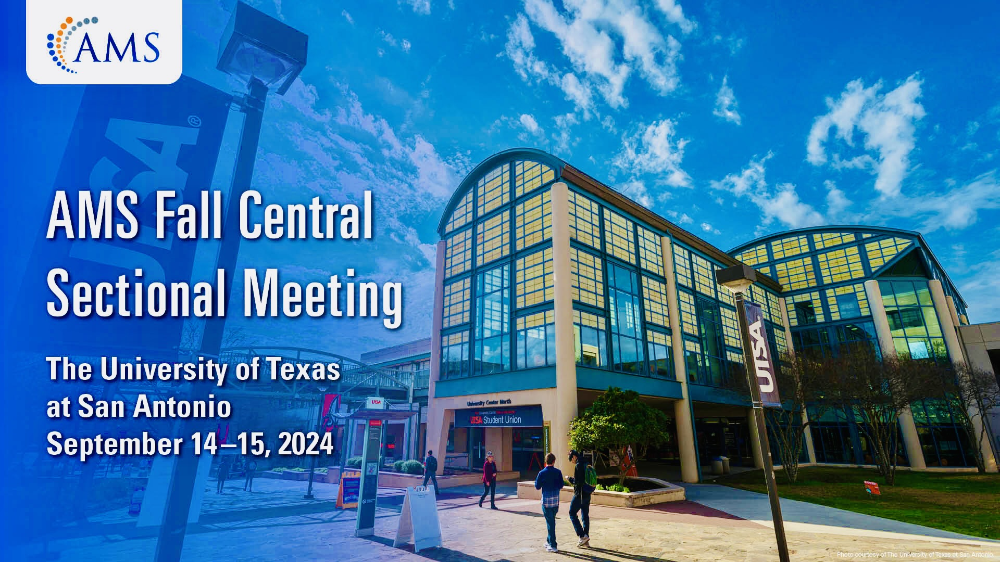

Prairie View A&M University, Texas | March 2025
Presented a research talk at the Texas MAA: 104th Annual Meeting 2025, held at Prairie View A&M University, Texas. The talk focused on the existence and nonexistence of sign-changing radial solutions to elliptic differential equations on the exterior of the ball of radius R>0 in R^N.
This conference brought together researchers in mathematics. My presentation contributed to discussions on recent developments in PDEs.

University of Texas, San Antonio | September 2024
Presenting my research on superlinear elliptic differential equations at the AMS Fall Central Sectional Meeting 2024 at the University of Texas, San Antonio, was a valuable opportunity.
Sharing the results I found enabled me to participate in ongoing conversations about new developments in partial differential equations with fellow mathematicians at the conference.
Texas State University, San Marcos | March 2024
Attended the 2024 Spring Meeting of the Texas Section of the Mathematical Association of America (MAA), hosted by Texas State University.
The conference featured talks and sessions on mathematics research, pedagogy, and outreach.
Participated in professional development opportunities and engaged with current discussions in the mathematics community.